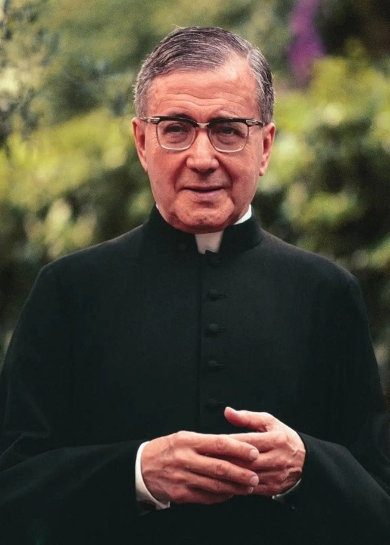
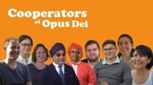

— St Josemaría

Saint Josemaría often said that the entire work of Opus Dei is summed up in providing formation. A formation that “does not concern only one part of the person, but the entire being: it has to reach equally the intellect, heart and will.”
And therefore, it is a human, professional, spiritual and apostolic formation, which aims at making the light and salt of Christ present in the ordinary activities of our life.
Talks are available for all desiring to learn more about the Catholic faith. They run for approximately 30 minutes once a month, followed by a get together where participators get to meet and know each other.
| Suburb | Frequency | Time |
|---|---|---|
| Castle Hill | Every 2nd Tuesday | 8:00pm – 9:00 pm |
| Pennant Hills | Every 1st Monday | 7:30pm – 8:30 pm |
If you wish to participate, or for additional information please contact us on: offofcoopph@outlook.com
Cooperator Circles are for cooperators. The point of the circle is to make space for Jesus to come into the personal details of your daily life. It shouldn’t end when the person giving it stops talking. In a sense, that’s when it starts: when you pray about it, think about what you heard, struggle to put it into practice, and bring it to your family and friends.
| Suburb | Frequency | Time |
|---|---|---|
| Castle Hill | Every 2nd Tuesday | 8:00pm – 9:00 pm |
| Pennant Hills | Every 1st Monday | 7:30pm – 8:30 pm |
| Zoom | Every 4th Tuesday | 8:15pm – 9:00 pm |
If you wish to participate, or for additional information please contact us on: offofcoopph@outlook.com
Recollections are a chance to step back from the whirlwind of daily tasks for around 2 hours of quiet prayer spent looking at God, the world, and ourselves. It includes a spiritual reading, a meditation given by a priest, examination of conscience, a talk, and benediction. The most important thing is to put yourself in front of our Lord, to look at Him and to let Him look at you.
| Address | Date / Frequency | Time |
|---|---|---|
| TBA | TBA | TBA |
If you wish to participate, or for additional information please contact us on: offofcoopph@outlook.com
Retreats are a days-long break to spend time with God in silence and prayer. It is a time to renew our faith, welcome the Holy Spirit's light, and calmly explore the areas in which we can move forward in our Christian life.
| Venue | Bookings |
|---|---|
| Kenthurst Study Centre | mensactivities.org |
Cooperators and friends are involved in various apostolic and social projects across Australia focusing on professional ethics, family, and youth education.
| Event | Dates | Venues |
|---|---|---|
| Cooperator Weekend | TBA | TBA |
| End of Year Dinner | December | TBA |